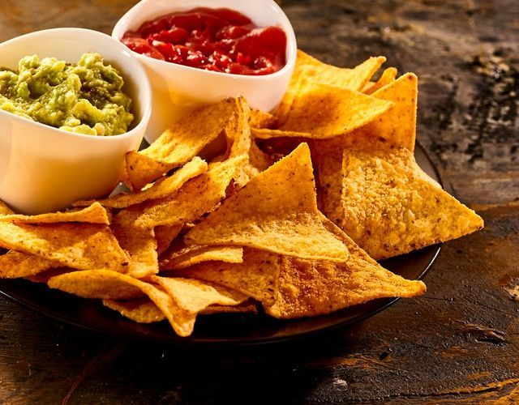

Nachos — хрустящая закуска с сыром
Начос — популярная мексиканская и техасско-мексиканская закуска из кукурузных чипсов (тортилья-чипсов), посыпанных расплавленным сыром и различными добавками: халапеньо, фасолью, мясом, гуакамоле и сметаной. Идеально к фильму или вечеринке.
На противень выложить чипсы, посыпать тёртым сыром, фасолью и нарезанными халапеньо. Запекать 5–7 минут при 200 °C, пока сыр не расплавится. Достать, посыпать нарезанными томатами и кинзой. Подавать с гуакамоле и сметаной прямо на противне.
Назад